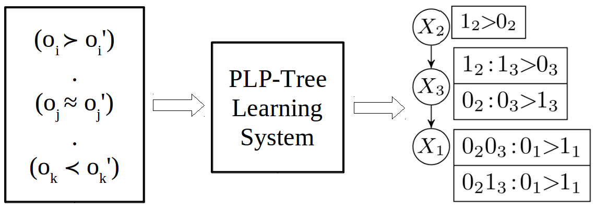
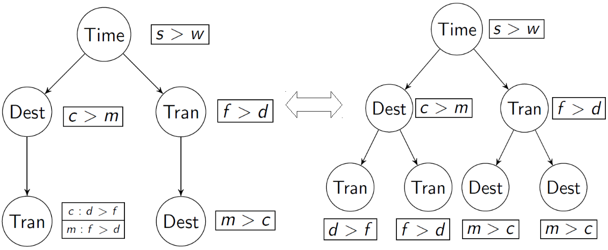
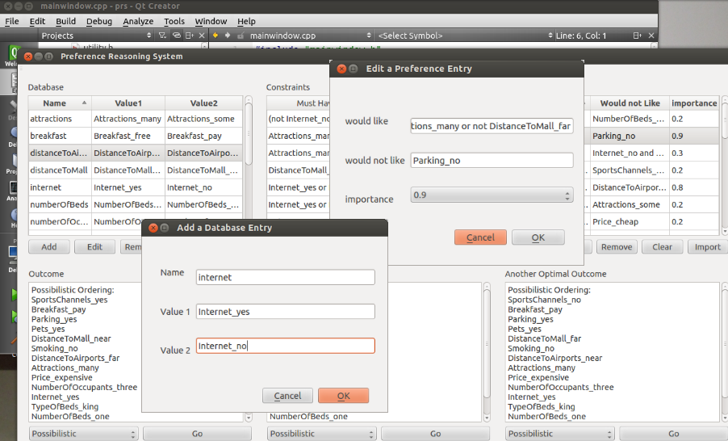

Preference Learning Library
To facilitate preference learning, we build a library of various preferential datasets useful for conducting preference learning experiments on real-world data.
Preference Learning

We introduced the preference formalism of partial lexicographic preference trees, or PLP-trees, over combinatorial domains of alternatives. We study the problem of passive learning, that is, the problem of learning preference models given a set of pairwise preferences between alternatives, called training examples, provided by the user upfront. Specifically, for several classes of PLP-trees, we study how to learn (i) a PLP-tree, preferably of a small size, consistent with a dataset of training examples, and (ii) a PLP-tree correctly ordering as many of the examples as possible in case of inconsistency. Then, we evaluate the predictive power of our model empirically in comparison with other ranking systems in the setting of instance ranking, corresponding to ordinal classification in machine learning.
Social Choice for Combinatorial Domains

When candidates are combinations of values
from domains of features, there are just too many of them for humans to
express preferences as strict total orders (or votes) over all candidates.
However, the system of lexicographic preference trees (LP-trees)
often provide compact representations of preferences over combinatorial
domains. Our work focuses on two preference-aggregation problems, the
winner problem and the evaluation problem, based on positional scoring
rules (such as k-approval and Borda) when preferences are represented
as LP-trees. We obtain new computational complexity results of these
two problems and provide empirical analysis in two programming formalisms,
answer set programming (ASP) and weighted partial maximum
satisfiability (WPM).
Related:

Preference Modeling and Optimization

Preferences over sets can be modeled as weighted propositional formulas. Given a database (the space of possible outcomes), constraints (filtering the database to get the space of feasible outcomes) and preferences (soft constraints indicating personal likings and dislikings), we design and implement a preference reasoning system that automatically produces optimal solutions based on multiple criteria: possibilistic logic, leximin ordering, discrimin ordering and pareto dominance.